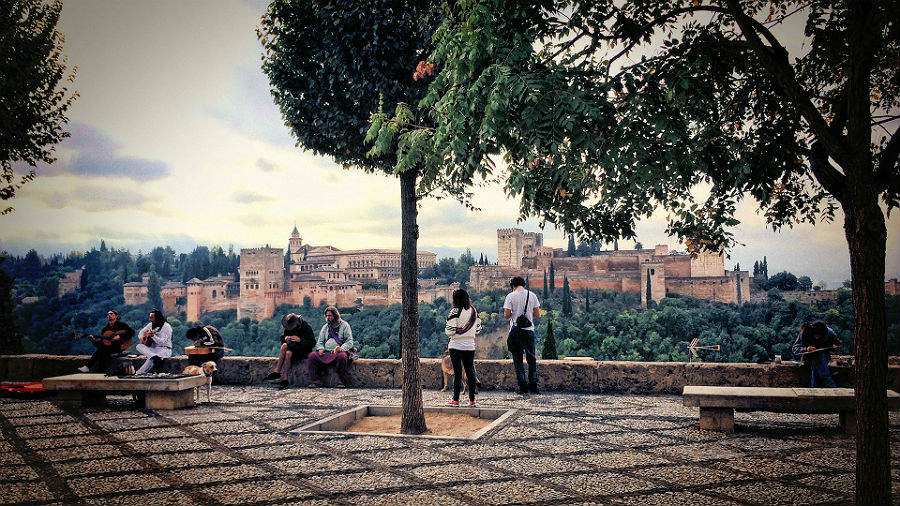

El Mirador de San Nicolás se sitúa en el Albaicín, en la parte más alta de la Alcazaba Qadima. Este enclave tenía como función principal, en la época Zirí, como lugar de reunión y plaza de armas. Su configuración inicial era una plaza rodeada por casas y palacetes árabes, donde se dice que tuvieron lugar secretas negociaciones que terminaron en la rendición de Boabdil y la toma de Granada por los Reyes Católicos en 1492.
Con el paso del tiempo se fue despejando este espacio hasta mediados del siglo XIX, cuando tomó las dimensiones que tiene actualmente.
Hoy el Mirador de San Nicolás es una plaza de forma cuadrada, con árboles alrededor, bancos de piedra y el típico empedrado granadino.
Está siempre animado, con foráneos y locales. Abundan los vendedores de artesanía y grupos que con sus guitarras improvisan toques flamencos.
Situado en el corazón del Albaicín, junto a la que fue una de las antiguas mezquitas de la ciudad musulmana, es el mirador más emblemático de Granada. Rincón romántico por excelencia, desde el se contempla una panorámica completa de la Alhambra, Sierra Nevada, la ciudad y la Vega de Granada. Y, según el expresidente de Estados Unidos Bill Clinton:
“La puesta de sol más hermosa del mundo”.